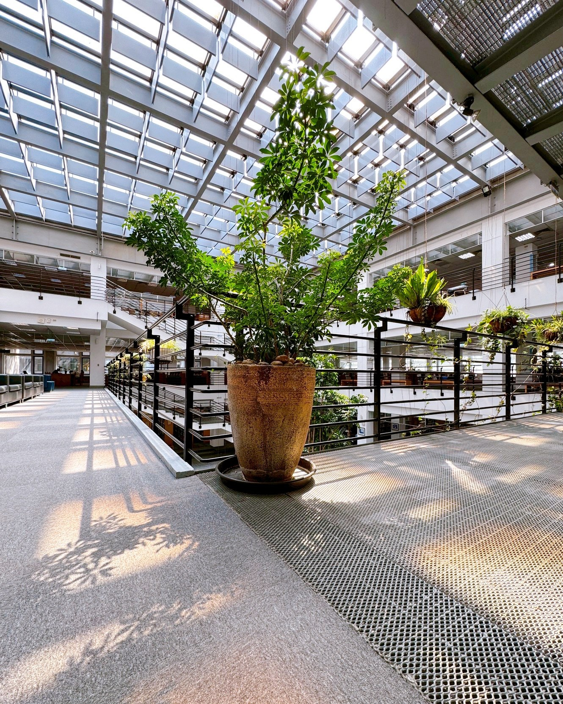

第五ステーション：空間と中庭の植栽
元智大学図書館の建築設計は階段状の構造を採用しており、空間がより広く、スムーズに感じられます。
中庭には天窓が設けられ、四方の窓から自然光が差し込みます。
緑豊かな植栽の景観と相まって、明るく開放的で、自然と調和した雰囲気が演出されています。
ここは単なる建築空間ではなく、光と緑が織りなす絵画のような場所であり、館内で最も人気のある写真撮影スポットの一つでもあります。
元智大学図書館の建築設計は階段状の構造を採用しており、空間がより広く、スムーズに感じられます。
中庭には天窓が設けられ、四方の窓から自然光が差し込みます。
緑豊かな植栽の景観と相まって、明るく開放的で、自然と調和した雰囲気が演出されています。
ここは単なる建築空間ではなく、光と緑が織りなす絵画のような場所であり、館内で最も人気のある写真撮影スポットの一つでもあります。